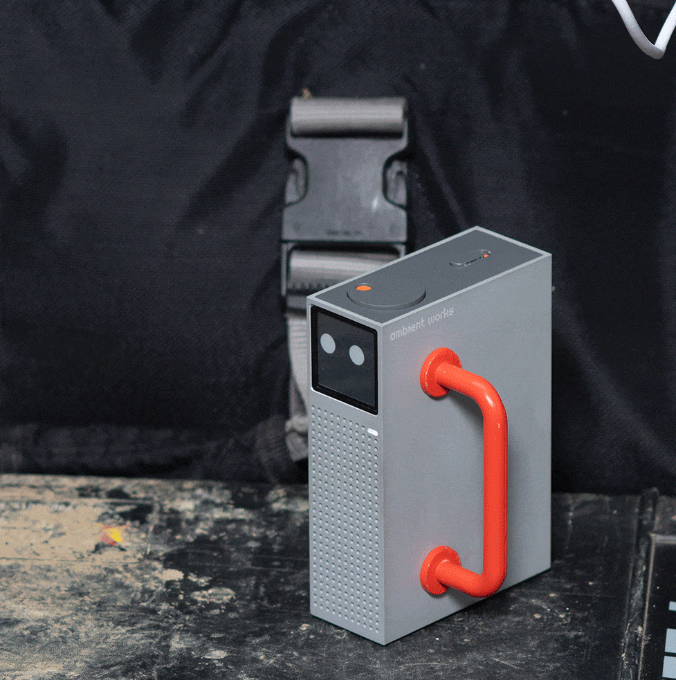
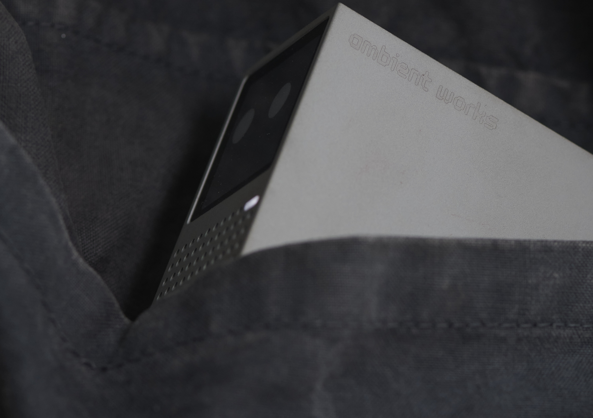

Ambient Works Unveils "ambient one" on Kickstarter – The All-in-One Ambient Sensing That Guides You Through Data While Providing Actionable Solutions
London, May 2024

Ambient Works, a pioneering start-up funded by Royal College of Art and Imperial College graduates, is thrilled to announce the imminent launch of "ambient one," a state-of-the-art air quality monitor to track and record multiple air pollutants, get immediate AI-powered insights and obtain actionable solutions. This revolutionary device will be available for pre-order soon on Kickstarter, marking a significant leap in environmental awareness within workspaces. Based on the fundamental principle for which the air around us is a silent yet potent catalyst for innovative thinking (as backed by countless studies by now), ambient one bridges the gap between busy professionals and a market that is fragmented and oftetimes challenging to navigate.
"You can’t improve what you don’t measure. With 'ambient one' professionals will be able to monitor and record various pollutants in the air they’re breathing while receiving tailored advice on how to minimise toxic particles in their surroundings. Understanding and controlling air quality in creative and non-creative environments isn’t just about health; it’s about nurturing creativity and boosting productivity, and we have witnessed this first hand” - explains Giulio Ammendola, Co-Founder of Ambient Works.

The device’s number one superpower lies in its unique capability to link air quality data with specific activities occurring in work areas. This feature enables users to pinpoint which materials, processes, and activities contribute most to pollution. By documenting such insights on a clear timeline, utilisers are equipped with the tools they need to effectively understand and reduce their environmental impact.
“It's very useful to be able to tag specific activities to certain levels of dust, as not all carry the same risk. For instance, high particle levels are often linked to glazing, which is definitely something you want to avoid" ” - states Ceramist and ambient one user Marie Tricaud.
Extremely accurate, the tool offers all-in-one sensing and boasts an extensive suite of auditing capabilities, tracing Particulate Matter, Carbon Dioxide, Volatile Organic Compounds (VOCs), and Nitrogen Oxides (NOx). Enhanced by cutting-edge Swiss-made sensors, it ensures unparalleled precision and reliability in detecting air quality concerns.

At software-level, ambient one’s user-friendly app provides real-time data and AI-driven tips that are, as said, always tailored to the specific activities and conditions of each user’s space. Not only does this information guide you through data but it also provides valuable insights into individual processes, adding significant value to ambient one’s offerings.

Intelligent and adaptable, ambient one retains a compact, familiar book-like format, seamlessly blending ease of use with high design value. This innovative tool is designed to accommodate various aspects of a daily routine at the studio, in the office, at the lab, or even at home.

It can be placed vertically, horizontally, or upside down. The display utilises e-paper technology, which will adjust and change modes automatically. It’s no news how electronic paper extends battery life and provides a more serene viewing experience – it won’t be just another screen in front of you.

Additional standout features include its built-in magnets, allowing it to be easily attached anywhere. This ensures that the sensors are positioned close to the action, thereby enhancing both functionality and convenience. It won’t be just another gimmick hidden next to a wifi router.

Aesthetic and functional appeal blend in an unmatched way, thanks to an expert choice of materials that enhances both. The main enclosure is, in fact, crafted from extruded aluminium profiles: sturdy and durable, it ensures longevity while providing a unique and premium tactile experience that sets ambient one apart from typical smart devices.
All ambient one’s electronic components are conveniently housed within the aluminium extrusion and can be effortlessly removed by taking out a few screws. This secures straightforward access for opening, upgrading, and repairing. Aluminium is also highly recyclable and offers versatile treatment options, aligning with Ambient Works’ commitment, at the intersection of technology, innovation, and design.
Last but not least, the team is shaping the future of ambient one with pioneering approach, focusing on its expandability. They’re working to develop a modular design that would set a new standard in environmental health technology. This design promises unprecedented adaptability in environmental monitoring – so stay tuned.
###
ABOUT Ambient Works
Founded in 2023, Ambient Works is committed to improving environmental conditions in personal and professional settings. By focusing on innovative technology solutions like "ambient one," Ambient Works aims to empower individuals to take control of their environmental health, ensuring safer and more productive creative spaces. ambient one has been awarded an Innovate UK Creative Catalyst grant, which supports the development and testing of this technology. ambientworks.io @ambientworks
Press package can be found here. For further information or additional assets please contact sofia@sofiapandolfo.me